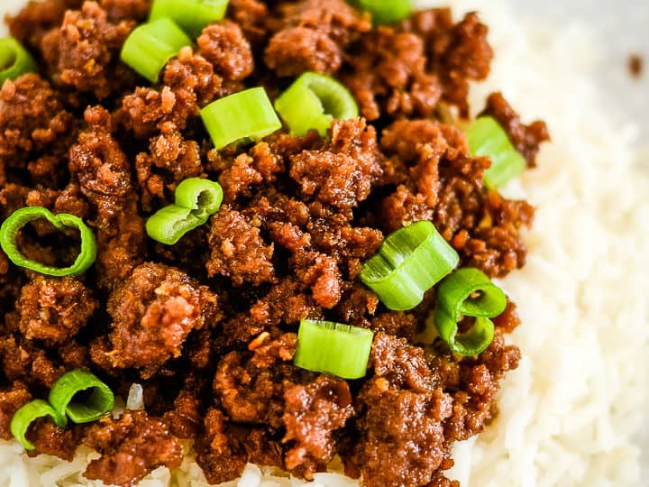

Ground Beef recipes

Description
Ground beef, minced beef or beef mince is beef that has been finely chopped with a knife or a meat grinder (American English) or mincing machine (British English). It is used in many recipes including hamburgers and spaghetti Bolognese.
Ingredients
- 2 pounds ground beef chuck
- 1 pound bulk Italian sausage
- 3 (15 ounce) cans chili beans, drained
- 1 (15 ounce) can chili beans in spicy sauce
- 2 (28 ounce) cans diced tomatoes with juice
Steps
- Prep:30 mins
- Cook:2 hrs
- Total:2 hrs 30 mins
- Servings:12
- Yield:12 Servings